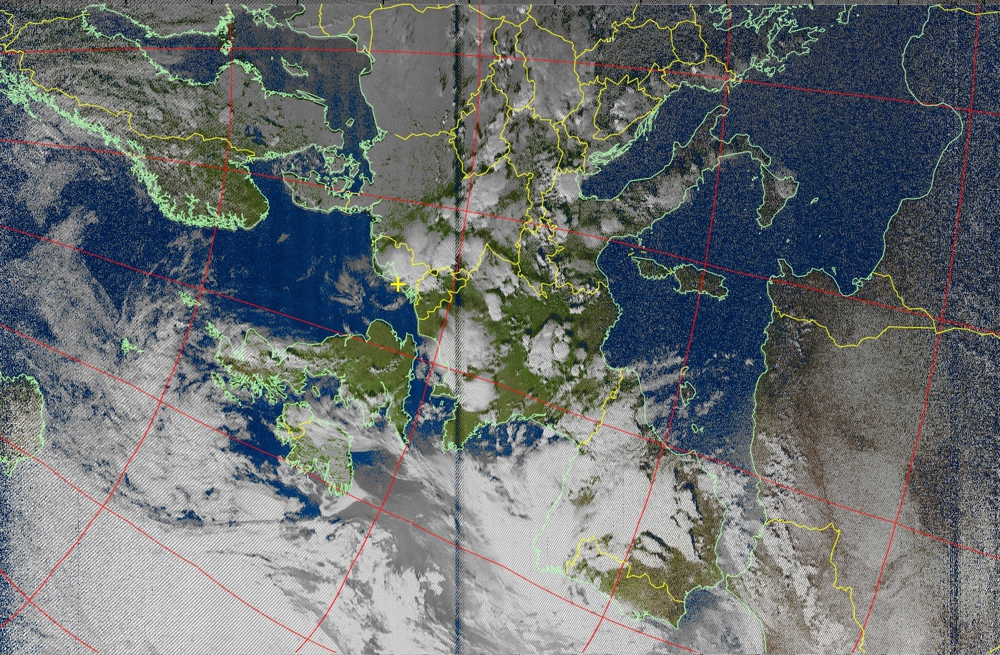

We use tracking equipment and software to receive RF signals from various satellites. As part of our ground station activities, we have tracked the FOX-1D satellite using a foldable Yagi-Uda antenna and also received SSTV images from the International Space Station using a hand-held transceiver (Baofeng UV-5R) in January 2020.
Amateur Radio on the International Space Station (ARISS) is a program to connect students and amateur radio enthusiasts from around the world to the astronauts at ISS. In this program, astronauts transmit some signals for amateur radio enthusiasts to receive them. These signals are usually encoded images transmitted using the SSTV communication protocol. Inter-MAI-75 (Formation and Popularization of Space Exploration) is an experiment by the Moscow Aviation Institute under the ARISS program. Here are some of the images successfully received and decoded by our team members The amateur radio enthusiasts who successfully receive and decode these images are awarded by renowned ham radio clubs as a sign of acknowledgment of their satellite tracking skills. Here are some of the diplomas received by our members. On the 20th anniversary of the ARISS program, ISS transmitted SSTV images from 24th December to 31st December 2020. We participated in this activity and successfully received the SSTV images. Ham Radio Club, IIT Bombay was honoured to have been awarded the ‘ARISS SSTV Award’ for the same. (20th Anniversary image and SSTV Award)
Due to the coronavirus pandemic and lack of access to our ground station and equipment, we decided to widen our scope and explore virtual tracking with the help of webSDRs. It is done by accessing ground stations across the world to receive signals. The members of the Student Satellite Program are regularly trained and made to compete online to track satellites and receive signals. NOAA is a US-based agency that deploys a series of weather satellites in space and sends images of the Earth. We successfully tracked NOAA 15,18 and 19 to receive images of the Earth above Europe and America.
